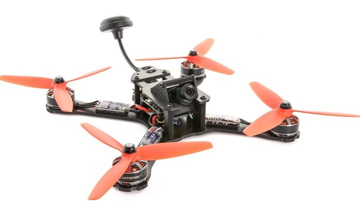

On entends partout parler des courses de drones et même de FPV Racing. Je vais vous présenter ce tout nouveau sport mécanique alliant la haute technologie des drones et la vitesse de la course.
FPV pour commencer, acronyme anglais de First Person View correspond au fait de voler en immersion, avec une vue à la première personne. Le pilote dirige son appareil à l’aide de la vidéo transmise en temps réel dans des lunettes ou un masque (voire sur un écran) en provenance de la caméra située à l’avant de son racer. Le vol en immersion ou FPV existait déjà avant l’arrivé des drones et était (et l’est toujours) pratiqué dans différents secteur de l’aéromodélisme.
Le flux vidéo est envoyé en analogique, ce qui donne une qualité d'image assez faible, contrairement à ce que sont capable de filmer les caméras que nous utilisons en général, qui elles, sont numériques. Actuellement le numérique ne peut être utilisé pour la pratique du FPV car le temps de latence est bien trop élevé, et à plus de 150 km/h celà est ingérable. De plus en numérique, si le signal est trop faible, on a ce qu'on appelle un blue screen, c'est a dire que le retour vidéo se coupe.
La drone racing, ou course de drone en français (oui parce que c’est français à la base !!) est "né" en 2013 à Argonay près d’Annecy ou quelques amis ont eu l'idée d'aléger au maximum leurs drones et d'y installer du materiel FPV pour pouvoir faire des courses dans la forêt pendant leurs pauses repas. C’est ainsi qu’est né le FPV Racing en même temps que la désormais célèbre Team Airgonay qui fût la première à diffuser une vidéo de drone racing qui a depuis fait le tour du monde et cumule plusieurs millions de vues :
Cette vidéo a vraiment lancé le FPV racing puisqu’en l’espace de quelques mois, des équipes, des marques, des organisations ce sont créées pour développer ce tout nouveau sport mécanique, et ce, dans le monde entier. Depuis, le materiel évolue sans arrêt (et même trop vite) et des Leagues commencent à se créer dans différents pays (DRL).
Bénéficiant depuis le 1er Janvier 2016 de règles internationales, les course de drones ont généralement lieux sur des espaces plats et découverts sur lesquels un parcours est définit à l’aide de portes (gate), de drapeaux et dont le tracé est indiqué par des plots posés au sol. Elles peuvent également avoir lieu dans des espaces couverts (parking souterrain, hangar) et dont le tracé peut être indiqué par des éléments lumineux. La longueur du parcours bien que limitée à 250 mètres par la Fédération Aéronautique International, varie selon les compétitions mais devrait s’harmoniser d’ici peu.
L'objectif, comme dans toute course, est d'effectuer un nombre défini de tour le plus rapidement, et ce, sans endommager son drone car en cas de chute empêchant le concurrant de redécoller (casse) il ne pourra pas y toucher et sera donc disqualifié de la manche.
Le nombre de pilotes par course est lui aussi très variable selon les compétitions et peut aller de 2 à 8 pilotes (au delà de 8 pilotes, les interférences vidéo deviennent trop importantes). Certaines courses sont uniquement réalisée en solo, c’est le chronomètre qui permet de départager les concurrents(time trial).
Voici une vidéo produite par la DGAC (Ministère de l'écologie et du développement durable) résumant les 10 règles primordiales à respecter lorsque vous pilotez un drone :
Elle permet de diriger le drone et d’en modifier le comportement (armement des moteurs, mode de vol…). La radio-commande transmet les ordres (c’est l’émetteur du signal) au drone via un récepteur radio branché sur le racer lui-même relié au contrôleur de vol de la machine.
Il existe une petite dizaine de modèles adaptés pour le FPV Racing, le plus répandu à ce jour étant la Taranis X9D de la marque FrSky. Récemment de nouveaux modèles tels que la TBS Tango et la Turnigy Evolution, plus proches d’une manette de console de jeu et plus simple d’utilisation ont fait leur apparition et séduisent de plus en plus de pilotes.
Les prix vont de 75€ à 290€ pour les modèles les plus complet.
Également appelé multi en abréviation du terme multirotor ou quad pour quadricoptère. Il est lui même composé d’un ensemble d’éléments (moteurs, hélices, ESC, contrôleur de vol, PDB, antennes…) dont vous pourrez retrouver le détails dans notre wiki. Pour la pratique du FPV (vol en immersion), on y trouvera également une caméra ainsi qu’un émetteur vidéo transmettant en temps réel le flux vidéo en provenance de la caméra.
La taille d’un drone est définie par la classe de son châssis (distance en millimètres de la diagonale séparant l’emplacement des deux moteurs). D’abord en 300 puis en 280, la classe 250 est “longtemps” restée la plus utilisée. Depuis quelques mois c’est désormais les formats 190/210 qui règnent en maître avec l’émergence de la classe 130mm très utilisée dans les courses indoor.
Vous pouvez choisir d’acheter un multirotor prêt à l’emploi ou en kit à monter vous même. Généralement plus évolutif et moins onéreux, la deuxième option est la plus recommandée car cela vous permettra de vous familiariser avec les composants et d’être en mesure de réparer votre racer en cas de casse (ce qui arrivera forcément un jour ou l’autre).
Compter entre 200 et 300€ pour un drone racer performant et de bonne qualité.
Elle même composé de deux éléments reliés entre-eux par des câbles et alimentés par une batterie :
Nécessaire au fonctionnement du multirotor, leur autonomie (entre 3 à 6 minutes) nécessite d’en avoir plusieurs à disposition. Pour débuter 4 à 5 LiPo pourront suffire mais sachez que les meilleurs pilotes vident environ 20 batteries LiPo par entraînement. Les batteries LiPo utilisées sur les drones de course sont des batteries à 3 ou 4 cellules (3S ou 4S).
Dans la pratique du FPV Racing tout comme dans l’utilisation d’un multirotor en règle générale il y a certaines précautions à prendre afin de vous éviter de vous blesser et/ou provoquer un incendie. Si vous débutez le FPV Racing, autant prendre de bonnes habitudes dés maintenant et veiller à vous rappeler de ces quelques règles même une fois que vous serez un peu plus expérimenté.
Les multirotors de FPV Racing (ou drones de course) ne peuvent pas être comparés aux jouets que l’on trouve facilement de le commerce et destinés au grand public. Leur utilisation doit impérativement être effectuée par un adulte ou par un adolescent de plus de 14 ans et sous la surveillance d’un adulte.
Deux éléments sont a manipuler avec une précaution particulière de part les dommages qu’ils peuvent causer : les hélices, les batteries LiPo.
Les hélices d’un moteur de racer (drone de course) peuvent tourner à plus de 40 000 tours/min, vous comprenez facilement, vue leur taille (5 ou 6 pouces) qu’en cas de contact avec une partie de votre corps vous pourriez être gravement blessé.
Il est donc important avant de manipuler le drone de TOUJOURS vérifier :
Vous serez également amené a effectuer des configurations nécessitant de brancher le contrôleur de vol présent dans votre multirotor à votre ordinateur. Dans ce cas et surtout si vous effectuez un test de rotation des moteurs ou un calibrage des ESC : ENLEVEZ LES HÉLICES ! Sachez que de très nombreux pilotes (même expérimentés) ont subi de sérieuses coupures à cause des hélices, en intérieur lorsqu’ils configuraient ou effectueaient des réglages sur le multirotor.
L’utilisation des batteries LiPo (Lithium Polymère) nécessite quelques précautions qu’il convient de prendre car en cas de mauvaise manipulation, les éléments internes (cellules) peuvent s’endommager et causer d’importants dommages : explosion, incendie.
Ne jamais laisser une batterie LiPo à portée des enfants, à proximité de matériaux inflammables ou conducteurs, sans surveillance durant la charge, exposée directement au soleil ou dans un lieux pouvant dépasser les 60°C (voiture au soleil par exemple).
Pour plus de sécurité ne laisser pas vos batteries LiPo sur le drone après utilisation, il est recommandé de stocker vos batteries dans un conditionnement hermétique au feu (ancienne caisse de munition de l’armée par exemple).
Les batteries LiPo ne doivent présenter aucune dégradation extérieure visible telle que des gonflements, coupures, déformations, coulures. En cas de doute, ne pas tenter de la charger mais procéder à sa neutralisation même si elle est neuve.
Après un choc (crash) ou après une charge, si vous constatez que la batterie LiPo a une température excessive, enlever la batterie du drone ou du chargeur, disposer la batterie dans un endroit ventilé et loin de tout matériau inflammable, observer la batterie pendant 30 minutes en respectant une distance de sécurité. Si après cela vous constatez une quelconque dégradation : neutralisez la batterie.
Le chargement d’une batterie LiPo doit être effectué sur une surface non inflammable, sous surveillance et avec un chargeur spécifiquement prévu à cet effet. Le chargement doit être effectué à un maximum de 4,2 Volts par élément (cellule) et à une vitesse de 1 C.
Ne jamais charger une LiPo : directement sur le drone, endommagée, encore chaude, dont la tension est inférieure à 3 Volts (dans ce dernier cas votre batterie est devenu inutilisable et doit être neutralisée).